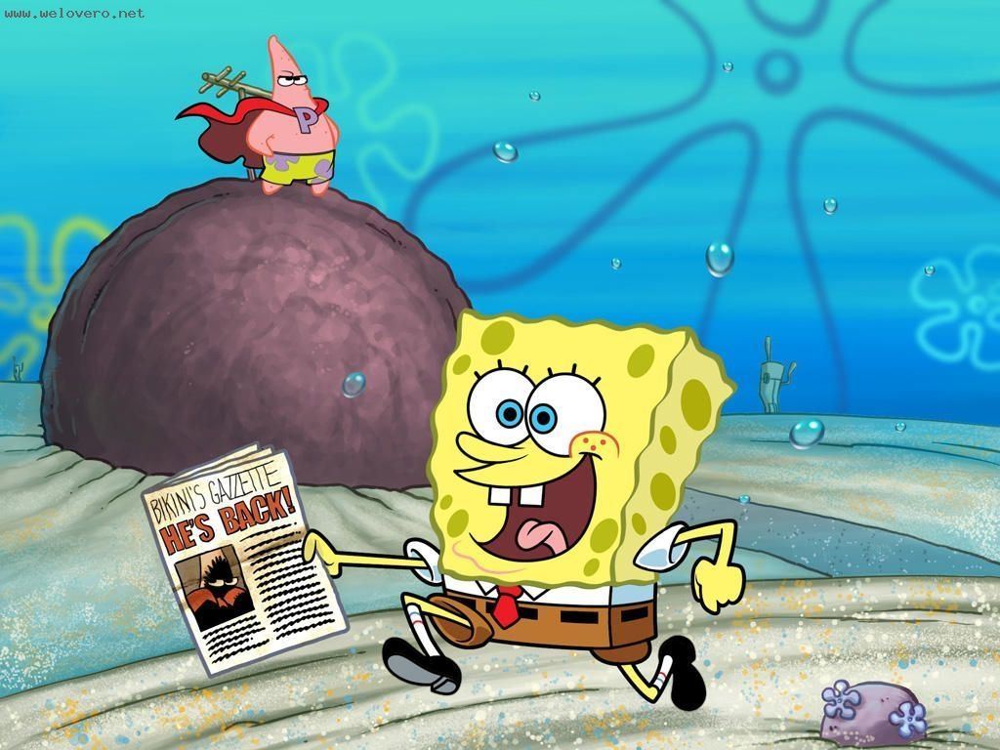

SpongeBob SquarePants is a square-shaped yellow sponge that lives in a pineapple on Bikini Beach (Pants Village, Beach Fort). His pet is a sea snail called "cat~cat~". SpongeBob likes to catch Jellyfish, who is the number one chef in The Krusty Krab. Pai Daxing and Sandy are both his friends. SpongeBob can always cause troubles to the peaceful world, although he makes some jokes, but he can always get out of trouble.
Then new troubles were created. Around the mysterious formula of Crab Crab Fort, the ruffian boss and the crab boss launched a new round of war. Although SpongeBob SquarePants successfully defeated the violent attack of the ruffian boss, but still fell into the opponent's trick. At the critical moment, the formula disappeared out of thin air, and the direct consequence was that no one could make crab cakes anymore. For the residents of Beechburg, who rely heavily on crab cakes on a daily basis, this news is tantamount to a bolt from the blue. The tranquility of the town has disappeared, and the underwater world has fallen into chaos and turmoil like the end of the world. Because he rescued the ruffian boss, SpongeBob SquarePants was treated as a traitor by everyone. In times of crisis, SpongeBob SquarePants, Pai Daxing, Boss Ruffian, Boss Crab, Sandy the Squirrel, and Brother Squidward can travel through time and space, and follow the scent of Crab Crab Fort to the crowded beach. There they met the bearded pirate (Antonio Banderas) who stole the secret recipe by tricks, so a battle to attack and defend Crab Crab Fort began.

Synopsis
